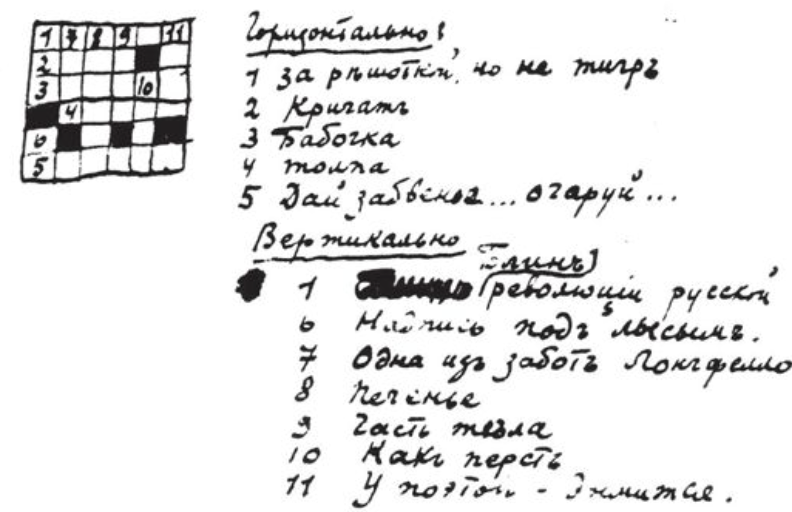

my kitty-cat,
i forgot to enclose the clipping yesterday.
here it is. in the morning i met sh. at the charlottenburg station,
we went to the grunewald, but since
the weather was very overcast, we didn’t swim, just had a walk
through the forest. on the way back, i got off the tram on
schillstr., – because a few days ago, i had noticed
an entrancing purrypuss there – which i bought today. he is perfectly
round, with a very sweet little snout and all in all no bigger than
a grape. and he is intended for you. only i don’t know how to ship
him – in a letter? no, he’s too chubby for that. i’ll consult
with someone tomorrow and then send him. only bear in mind that he is very,
very sweet.
had a veal cutlet and regina claudias compote
for lunch, and a letter from mother.
i got home around seven, read an idiotic french novel by the philistine rosny jeune,
then ate the usual cold-cuts. yes, i forgot to write that (so as to get rid of orlov)
i had to stop at a pub, where i had a beer – and also bought a chocolate bar, which i had at home with some milk. now a quarter past nine. i’ll go to bed soon.
my little one, how are you doing? i
love you. the sky is starry now, with a warm
wind blowing. the roses, fossilized by now,
are still standing on my table. a whole
month! my little one, i am kissing you
all over. there was a letterlet today. what’s
that about the little monkey?
V.
